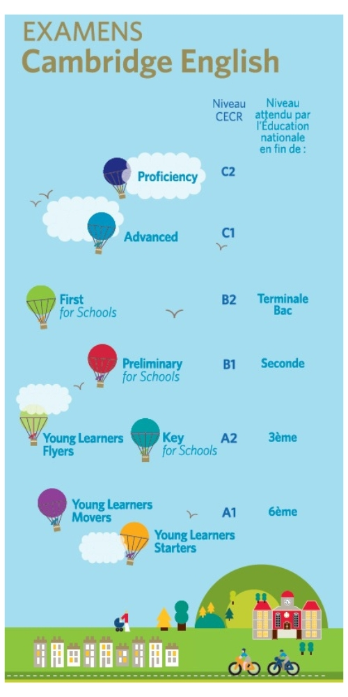

Ouverture internationale Institution Notre-Dame La Riche
L’Institution Notre-Dame la Riche place l’ouverture internationale au cœur de son projet d’établissement depuis des années.
Plus d’une soixantaine de nationalités sont représentées en son sein, ce qui en fait une grande richesse !
Ecole primaire Collège Lycées Ecole hôtelière Enseignement Supérieur / CFA Contacts / Liens Utiles
À l’École maternelle et élémentaire
Un apprentissage précoce de l’anglais dès la petite Section est proposé avec des enseignants anglophones.
Une validation des acquis par l'examen de Cambridge est proposée ainsi que la possibilité de de passer le « Young Learners Cambridge Exam », niveau Starters, Movers, Flyers.
Au Collège et Pôle Orientation 3ème/2nde, au Lycée Général et Technologique et à l’École Hôtelière
Notre Dame la Riche est accréditée Erasmus + Secteur de l’Enseignement Scolaire.
L’Institution organise régulièrement des voyages scolaires à l’étranger pour son collège et son lycée Général et Technologique avec le soutien financier de l’agence ERASMUS.
Elle a noué depuis des années des partenariats étroits avec des établissements en Allemagne ou encore en Autriche.
En Décembre 2022, une quinzaine de jeunes en classe de seconde ont participé à un projet pédagogique Erasmus, sur le thème de la gastronomie, incluant un voyage en Autriche de dix jours. Ces projets sont construits par des équipes pédagogiques impliquées.
Informations sur nos projets pédagogiques année scolaire 2023-2024 :
Dans notre pôle 3ème /seconde, ont été financées avec le soutien de l'agence Erasmus:
- 8 immersions 'Globetrotter' d'élèves en classe de seconde dans un lycée partenaire en Allemagne ( de 15jours à un mois)
- 3 mobilités d'accompagnateurs en Allemagne.
Cambridge English Certificate
Notre-Dame la Riche propose aux élèves de primaire, de 6ème, de 4ème et de lycée de passer la certification Cambridge afin d'attester de leur niveau d'anglais tout au long de leur scolarité.

DUAL DIPLOMA : obtenez le Bac Américain
1 Programme, 2 Diplômes.
À partir de la rentrée de septembre 2024, l’Institution Notre-Dame La Riche propose le programme Academica Dual Diploma, dès la troisième. Ce programme permet aux élèves d’obtenir à la fois le baccalauréat français et le High School Diploma (baccalauréat américain).
Durant 2, 3 ou 4 ans, les élèves suivront les cours en ligne, (3 à 5 heures par semaine), encadrés par des professeurs titulaires. Ce double diplôme permet aux jeunes d’acquérir un niveau d’anglais bilingue avancé et une autonomie de travail essentielle à la poursuite d’études.
Au Lycée Professionnel et à l’École Hôtelière
Notre-Dame la Riche est accréditée Erasmus + EFP Secteur de l’Enseignement et de la Formation Professionnels.
L’Institution Notre-Dame la Riche offre l’opportunité à ses lycéens de réaliser leur période de stage à l’étranger avec le soutien financier de l’agence Erasmus ou encore de la Région Centre Val de Loire via la bourse MobiCentre.
En 2023, plusieurs jeunes du lycée professionnel sont partis à l’étranger réaliser leur période de formation en milieu professionnel (4 semaines minimum). Des partenaires à Malte, en Espagne, en Croatie, en Roumanie, au Royaume-Uni... les accueillent. Ces stages sont encadrés par des équipes pédagogiques investies.
Pour en savoir plus sur les stages à l'étranger au lycée professionel, téléchargez la brochure : Faire un Stage à l'étranger
Informations sur nos projets pédagogiques année scolaire 2023-2024 :
Dans notre lycée professionnel, ont été financées avec le soutien de l'agence Erasmus :
- 12 mobilités à des fins de stage pour des lycéens des filières tertiaires et industrielles à Malte et au Royaume-Uni.
- 2 mobilités d'accompagnement à Malte et Royaume-Uni.
- 3 mobilités à des fins de formations pour des professeurs à Malte et en Irlande.
Dans l'Enseignement Supérieur et au CFA ISCB
L’Institution Notre-Dame la Riche offre l’opportunité à ses étudiants de réaliser leur stage professionnel à l’étranger avec le soutien financier de l’agence Erasmus ou encore de la Région Centre Val de Loire via la bourse MobiCentre.
En 2023, plusieurs étudiants sont partis à l’étranger réaliser leur période de formation en milieu professionnel (4 semaines minimum). Des partenaires à Malte, en Espagne, en Croatie, en Roumanie, au Royaume-Uni... les accueillent. Ces stages sont encadrés par des équipes pédagogiques investies.
Notre établissement est charté Erasmus Enseignement SupérieurERASMUSDAYS
Chaque année, l’Institution participe aux ERASMUSDAYS, trois jours de célébration du programme Erasmus+ en Europe au travers de l'organisation d'événements. En 2023, les ERASMUSDAYS auront lieu en octobre.
Contacts / Liens utiles
Contacts
Chargée de Mission Relations Internationales
Charlotte MOULIN - Tél. 02 47 36 32 14 - charlotte.moulin@indlr.fr
Ecole maternelle et élémentaire
Sandrine DUBOIS, Secrétariat administratif - Tél. 02 47 36 32 07 - secretariat.ecole@ndlr.fr
Collège / Pôle Orientation 3ème/2nde / Lycée Général
Célia FELIX, Secrétariat administratif - Tél. 02 47 36 32 08 - gestionadministative@ndlr.fr
Lycée Professionnel
Michèle CHAPUT, Directrice déléguée à la formation professionnelle - michele.chaput@indlr.fr
Enseignement Supérieur /CFA ISCB
Caroline PLATTEAU, Accueil / secrétariat - - Tél. 02 47 76 40 80 - iscb@iscb.fr